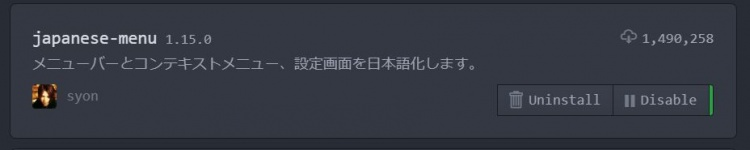
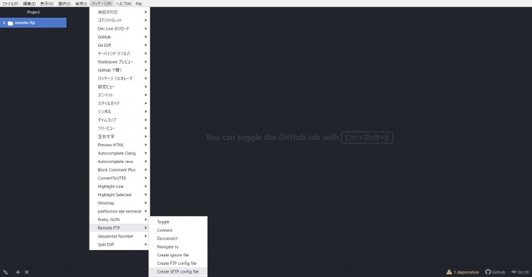
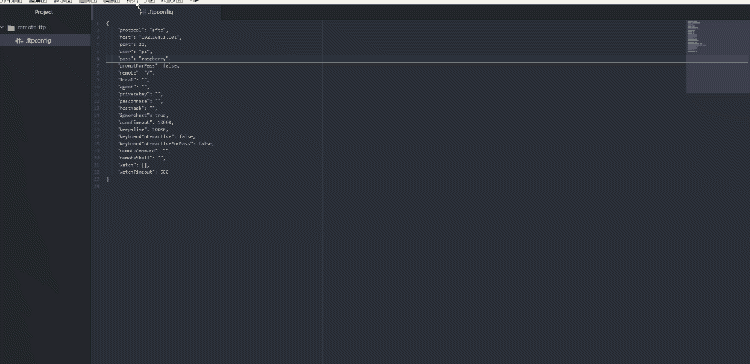
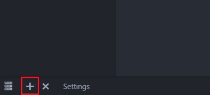

Atom を使った環境構築
Contents
Atom を使った環境構築#
概要#
このページでは, テキストエディター Atom を用いて Raspberry Pi の開発環境を整えます. なお, Atom だけでなく VScode にも同じような機能が存在するようですが, 今回は Atom に絞って環境構築を行います.(VScode で環境を整えたい方は各自調べてください) この環境構築において, ノート PC の OS は Windows10 としています. Mac 版や Linux 版の Atom でも行えますが, 多少異なる点があると思います. 以下がページ作成時の環境です.
作製日時 |
2020/09/01 |
|---|---|
ノートPC |
Dynabook U63(2018年度 生協PC) |
OS |
Windows 10 Pro 1909 |
Atom |
1.49.0 |
今回導入する remote-ftp によりファイルの操作を, platformio-ide-terminal により SSH 接続を行います.
Windows10 バージョン 1803 から, SSH クライアントが組み込まれたため TeraTerm を利用しなくても SSH 接続が可能となりました。
参考となるサイト
https://mimimopu.com/atom_raspberry_pi_programing/
以下のサイトからテキストエディタ Atom を入手してください. Atom 公式サイト
インストール方法がわからない方は『Atom インストール』等で調べればたくさんヒットしますので, 各自調べてみてください.
インストールの際に参考となるサイト
https://www.kkaneko.jp/tools/win/atom.html
https://pg-happy.jp/atom-texteditor.html
Atom 各種設定#
Atom の各種設定を行います.
とりあえず, Atom の日本語化を行います. 英語のまま利用しても構いません.
File ＞ Settings ＞ Install
より, パッケージのダウンロードが行えます. 検索欄に「japanese-menu」と入力し, 一番先頭に来たものをダウンロードします.

インストール終了後, Atom を再起動してください. これより先の説明では日本語化された Atom で説明を行っていきます. (上記の「File」なら「ファイル」)
他にも便利なパッケージはいくつもあるので, 好みのパッケージをインストールしてみて下さい. 以下の表は便利なパッケージの一部です.
パッケージ名 |
用途 |
リンク |
|---|---|---|
japanese-menu |
Atomが日本語化されます |
|
remote-ftp |
AtomからFTP・SFTP接続が行えます |
|
platformio-ide-terminal |
AtomからWindowsの「コマンドプロンプト」や「PowerShell」が直接利用できます |
|
highlight-selected |
ダブルクリックした単語全部にハイライトが付きます |
|
minimap |
ミニマップを表示させることができます.上記のhighlight-selectedでハイライトされたものも反映されます. |
|
file-type-icons |
tree-viewに表示されるファイルのアイコンが分かりやすくなります. |
パッケージ名が 太字 のものは今回の環境構築に置いて必須なパッケージです. インストールしておいてください.
Atom には無数にパッケージがあるので各自調べてみたら面白そうなのがあるかもしれません.
Hint
Atomのパッケージを詳しく紹介しているサイト
remote-ftp の設定#
まず, Atom パッケージである「remote-ftp」をインストールしてください.
remote-ftp は, Atom 上で WinSCP のようなファイル操作を行い, ファイルの編集を Atom 上で行うことができるようになるパッケージです. このパッケージを使うことによって, Windows 上から Raspberry Pi 上のファイルを直接編集することができるようになり, Windows と Raspberry Pi 間のファイルの移動の手間がなくなります.
実際には, Raspberry Pi 上の編集するファイルを指定したフォルダに自動でダウンロードし, ファイルを編集・保存後に自動的に Raspberry Pi へアップロードしています.

インストールが終了したら, Raspberry Pi との接続設定を行います. Atom のメニューバーより
ファイル ＞ プロジェクトフォルダを追加
から, Raspberry Pi のファイルを一時保存するフォルダを選択します. この指定したフォルダにファイルを保存することによって, Windows 上から編集できるようになっています. 皆さんがいつもプログラミングで使っているフォルダ等に空フォルダを作って指定していただいて結構です.(フォルダ名も適当な名前で大丈夫です)
プロジェクトフォルダを追加したら, エディタの左側にツリービューが表示されたと思います. （もともと Atom を使っている方は, remote-ftp で利用するプロジェクトフォルダが先頭に来るようにしてください.）
追加したプロジェクトフォルダは空フォルダなので中には何も入っていないと思います. この中に Raspberry Pi と接続を行うための設定ファイルを追加します. 右の画像のように Atom のメニューバーより
パッケージ ＞ Remote FTP ＞ Create SFTP config file
を押すことによって「.ftpconfig」というファイルが作成されます. メニューバーでクリックするのは「Create SFTP config file」です. 「Create FTP config file」ではありません.
生成されたファイルの以下の部分だけを変更してください.
"host": "example.com",
"user": "user",
"pass": "pass",
"host": "raspberrypi.local",
"user": "pi",
"pass": "raspberry",

接続成功した時の動作（クリックすれば GIF で動きます）
要するに,
「host」の部分が接続先
「user」がゲスト OS に設定したユーザ名
「pass」がゲスト OS に設定したパスワード
となっています. (パスワードを変更した場合は, 「pass」の部分を適宜変更してください)
変更が終了したら保存してください.
保存が終わったら, Atom のメニューバーより
パッケージ ＞ Remote FTP ＞ Toggle
を押してください. 押したら左側のツリービューに「Remote」というタブが現れると思います.
その「Remote」タブを押して, 「Connect」ボタンを押すと Raspberry Pi と接続できます. 接続できたら設定終了です.
初期設定では接続先のディレクトリは Raspberry Pi の root になっています. そのため, 編集中のファイルがあるディレクトリまで潜るのが大変な場合があると思います. そんなときは最初に設定を行った接続設定ファイルである「.ftpconfig」ファイルの「remote：”/”」の部分を変更することで, 接続先のディレクトリを指定することができます.
例えば以下のように変更するとします.
"remote": "/"
"remote": "/home/pi"
変更を行ったあとは再接続してください(ツリービュー右クリック →「Disconnect」→「Connect」)
そうすると, 接続直後から pi ディレクトリの内容がツリービューに表示されたと思います. このように, 「remote」要素の設定では, 接続時の接続先ディレクトリを指定することができます. しかし, pi ディレクトリより上の階層は行けなくなってしまいますので必要に応じて適宜変更してください.
platformio-ide-terminal の設定#
まず, Atom パッケージである「platformio-ide-terminal」をインストールしてください.
platformio-ide-terminal は, Atom 上で Windows の「コマンドプロンプト」や「PowerShell」を利用することができるパッケージです.
これを利用して, Raspberry Pi と SSH 接続を行います.

インストールが完了したら, エディタの下の部分に右図のような「+」ボタンが新しく表示されているはずです. (表示されない場合は Atom を再起動してみてください) これをクリックするとターミナルが開きます.
または, ショートカットキーとして「ctrl + @」が設定されておりますので、これを利用して開くこともできます. ターミナルが起動している状態でこのショートカットを押すとターミナル表示部の表示・収納ができます.
このパッケージでは複数のターミナルを起動させることもできます.
初期設定では, 開かれるターミナルは「PowerShell」が設定されています. 開かれたターミナルがきちんと使えるか, なにかコマンドを打って確認してみます.
例）$ ping raspberrypi.local
きちんと普通の PowerShell と同様の動作をしましたか？動作していればインストールは完了です.
ssh コマンドと今回導入した platformio-ide-terminal を使って Raspberry Pi と SSH 接続してみます. 下記のコマンドを実行してみてください. (SSH コマンドが利用できない場合は下のSSH の設定を行ってください)
$ ssh pi@raspberrypi.local
入力して Enter を押したあと
pi@raspberrypi.local's password:
と表示されますので Raspberry Pi のパスワードを入力してください. (入力した文字列は表示されませんが, きちんと入力されてます)
パスワードを入力して Enter を押して, いろいろ文字列が表示されてから以下のように表示されれば SSH 接続完了です.
pi@raspberrypi:~ $
導入は完了しましたが, 使いやすくするためにちょっとだけ設定を変更していきます. 特に必須事項というわけではないです.
ファイル ＞ 設定 ＞ パッケージ ＞ platformio-ide-terminal ＞ 設定
から, platformio-ide-terminal の設定を行うことができます.
設定項目 |
おすすめ設定 |
説明 |
|---|---|---|
Core > Auto Run Command |
|
ターミナルを起動する度に同じSSHコマンドを実行するのは面倒ですよね？ここの設定項目では起動直後に自動的にコマンドを実行させることができますので, SSH接続時のコマンドを入れておきます.Style > Animation Speed 2 ターミナルを表示・収納のスピードを少し速くしておきます. |
Style > Default Panel Height |
250px |
ここでは表示されるターミナルの高さを指定します.個人によって好みの高さがあると思いますので調節してみてください. |
Style > Font Size |
9 |
文字の大きさを設定します.こちらも好みの大きさに調節してみてください. |
Style > Theme |
pro |
初期設定ではエディタ部とターミナル部の背景が同じで分かりづらいので変更します. proでは背景が黒, 文字色が白となります. |
SSH の設定#
Windows10 バージョン 1803 から, SSH クライアントが組み込まれました. これにより「コマンドプロンプト」や「Power Shell」でも SSH 接続が可能となります.
まず, SSH コマンドが利用できるか確認します.
Windows のスタートメニューを右クリック ＞ Windows Power Shell
をクリックして, PowerShell を起動させます.
$ ssh
と入力して「認識されません」等のエラーが表示されれば, あなたの PC には ssh クライアントがインストールされていません.
Windows の「設定」 ＞ アプリ ＞ アプリと機能 ＞ オプション機能
より「OpenSSH クライアント」を押して, 「インストール」をクリックします.
インストールが完了したらもう一度コマンドを入力してみてください. 先程のエラー表示がなくなり, コマンドの利用方法が表示されればインストール完了です.